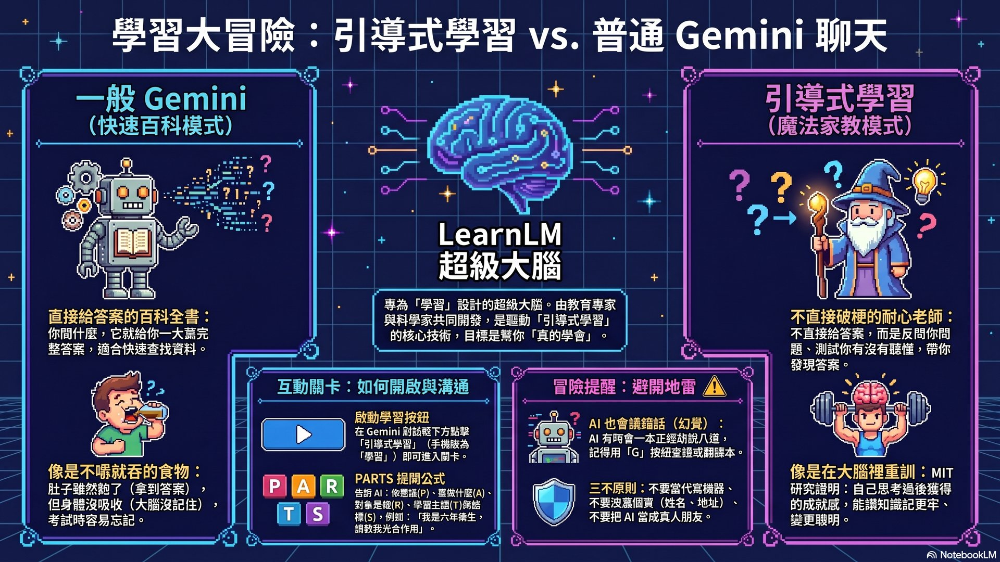
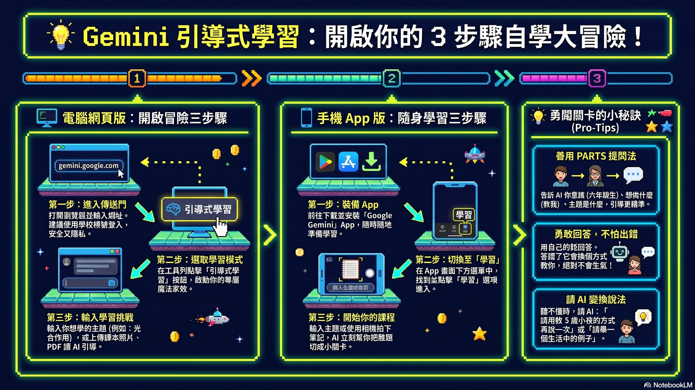
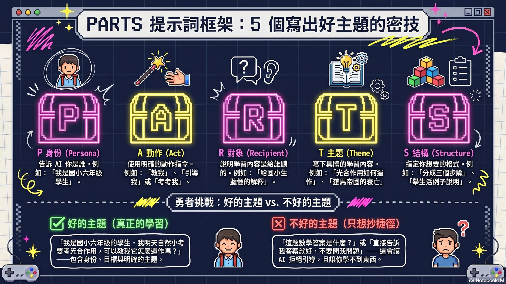
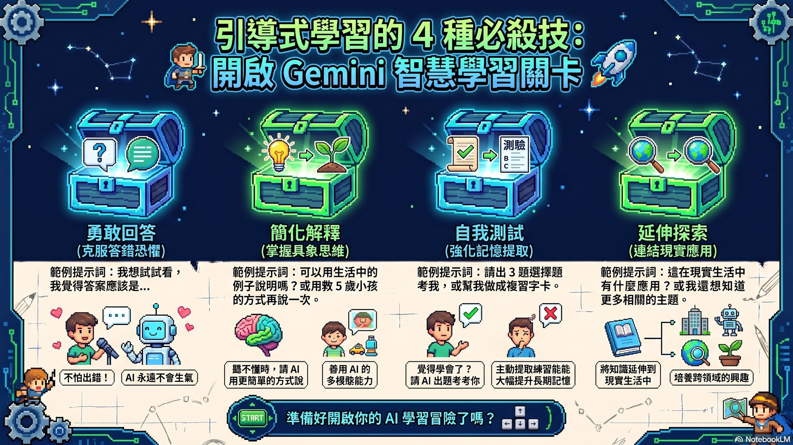
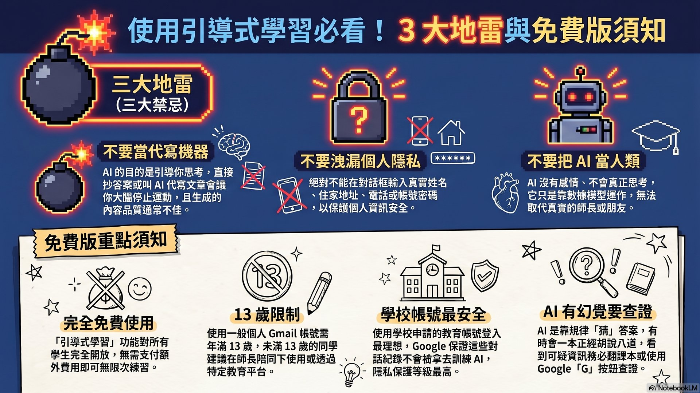
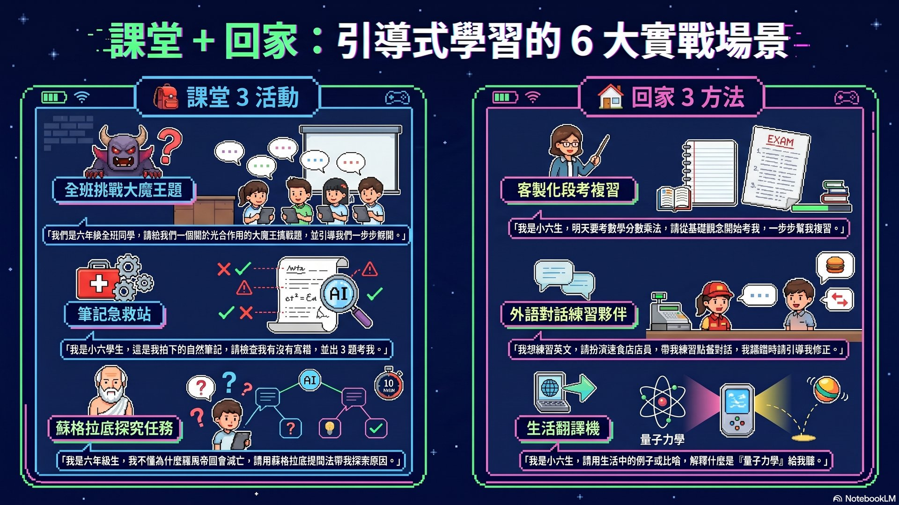

🧙♂️ Gemini 引導式學習
你的專屬 AI 家教

🎯 學習目標
🧩 什麼是 Gemini 引導式學習？
🔍 核心定義
Gemini 裡一個特別的學習模式，背後是 Google 專門訓練的 LearnLM 學習模型， 由教育專家、腦神經科學家一起打造，專門為「教會學生」而設計。
🧠 為什麼要這樣設計？
- 💡大腦只有在主動思考時，才會把知識記牢
- ⚠️AI 直接給答案，就像吃飯不嚼直接吞 → 肚子飽了卻沒吸收
- 📚MIT 研究：讓 AI 幫忙思考的學生，反而記不住也學不會
🎮 互動：比一比，兩種模式差在哪？
🤖 一般 Gemini（百科全書）
- 一問就給一大篇答案
- 適合快速查資料
- 不會反問你、不測試你
- 大腦沒運動，容易忘
🧙 引導式學習（耐心老師）
- 把難題切成小關卡
- 用蘇格拉底提問法反問你
- 測試你有沒有懂，再教下一步
- 適合真正學會新知識
關卡測驗 — STAGE 1
🎓 教師提示
- 引導學生討論：「為什麼直接拿答案反而學不會？」讓他們說出自己的經驗
- 可以舉例：背數學公式 vs 自己推導過程，哪一種記得久？
- 強調「引導式學習」不是限制，而是「讓大腦運動」的健身房
- 若學生質疑速度慢，提醒：考試時你需要的是「真的會」，不是「當時抄到」
🚪 如何開啟引導式學習？
💻 電腦網頁版
- 01打開瀏覽器，輸入 gemini.google.com
- 02用 Google 帳號登入（學校帳號最安全）
- 03在畫面下方對話框底下的工具選項，點擊「引導式學習」按鈕
- 04點「＋」可以上傳課本照片、手寫筆記、PDF一起學！
📱 手機 App 版
- 01下載 Google Gemini App（Play / App Store）
- 02打開並登入
- 03在對話框找到「學習（Learn）」選項
- 04直接用手機相機拍下課本或筆記上傳，超方便！

🎮 互動：跟我一起按！電腦版開啟模擬
關卡測驗 — STAGE 2
🎓 教師提示
- 上課前先確認學校教育帳號已啟用 Gemini for Education
- 若部分學生用個人帳號，提醒 13 歲年齡限制，請家長陪同使用
- 示範「上傳課本照片」功能，學生會驚呼連連
- 提醒學生：「關掉引導式學習 = Gemini 直接給答案」，學習時一定要打開
✍️ PARTS：寫出好主題的秘密武器

🗝️ PARTS 五大元素
我是誰
要 AI 做什麼
說給誰聽
要學什麼
想要的格式
我是（P）國小六年級學生，請（A）引導我學會（T）光合作用， 用（R）我能聽懂的簡單語言，（S）分 3 步驟並每步驟考我一題。
🎮 互動：PARTS 提示詞組合器
✅ 好的主題 vs ❌ 不好的主題
✅ 好（AI 會開心教你）
- 我是六年級，明天自然小考考光合作用，可以教我它怎麼運作嗎？
- 我對歷史有興趣，帶我認識羅馬帝國的衰亡
- 我攝影初學者，想學手機構圖，從基礎開始教
- 請陪我模擬速食店點餐英文對話
❌ 不好（AI 會拒絕直接做）
- 這題數學答案是什麼？
- 幫我寫一篇 500 字作文
- 直接告訴我答案，不要問我問題
- 把這份作業全部做完
關卡測驗 — STAGE 3
🎓 教師提示
- 用 PARTS 組合器讓學生即時生成提示詞，實作感立刻拉滿
- 先示範「不好的」提示詞被 AI 反問/拒絕，再示範完整 PARTS 的效果差異
- 提醒：只有「T 主題」是主觀的，PARS 四個可以當套版快速使用
💬 4 種互動必殺技

💡 學習不卡關的秘訣
AI 開始教你以後，別呆呆坐著！記住這 4 種互動必殺技， 你就能讓 AI 完全照你的步調、用你最懂的方式陪你學。
🎮 互動：切換看看四種技巧怎麼用
① 勇敢回答 AI 的反問
AI 教完一個小觀念後會反問你，用自己的話回答，不要怕答錯！答錯 AI 不會生氣，它會換個方式再教一次。
② 聽不懂，請 AI 換簡單方式說
千萬別硬撐！直接告訴 AI：
- ⑴「用教 5 歲小朋友的方式再說一次」
- ⑵「可以用生活中的例子說明嗎？」
- ⑶「請給我一個比喻」
③ 覺得懂了，請 AI 出題考你
別以為「聽懂」＝「學會」！一定要驗收：
- ⑴「我覺得聽懂了！請出 3 題選擇題考我」
- ⑵「幫我把重點做成複習字卡」
④ 太有趣了，請 AI 延伸學習
學完不要停下來！追著問下去：
- ⑴「這太有趣了！在現實生活中有什麼應用嗎？」
- ⑵順著 AI 推薦的新主題繼續探索 → 變成小達人！
關卡測驗 — STAGE 4
🎓 教師提示
- 讓學生分組實作：A 組練「回答反問」，B 組練「請換簡單方式」，C 組練「出題」，D 組練「延伸」。最後互相分享成果
- 特別強調：答錯沒關係，AI 不會笑你，這就是安全的學習環境
- 提醒學生：聽懂 ≠ 會 → 一定要用「請它出題」驗收
⚠️ 3 大地雷 × 免費版須知
💣 地雷 1：把 AI 當代寫機器
學不到東西、品質也差，老師和家長一看就知道。引導式學習的重點是「學會」，不是「交差」！
💣 地雷 2：洩漏個人隱私
真實姓名、家裡地址、電話、密碼、同學的照片 → 通通不能輸入！就算是學校帳號也要謹慎。
💣 地雷 3：把 AI 當人類朋友
AI 沒有感情、不會思考，它是「猜」出答案的。不能取代真實朋友、家人和老師。有心事請找真的人！

🪄 AI 會講錯話（幻覺 Hallucination）怎麼辦？
AI 不是百科全書，是靠規律「猜」答案，偶爾會一本正經胡說八道。解決方法：
- ✓用 Gemini 回答下方的 Google「G」驗證按鈕（double-check）自動查證
- ✓懷疑時翻課本、用搜尋確認
- ✓絕對不要全部照單全收
💰 免費版限制與技術問題
✅ 好消息
- 引導式學習完全免費，無限次使用
- 學校帳號對話不被看、不被訓練 AI
- 電腦、平板、手機都能用
- 支援語音輸入、拍照上傳
⚠️ 須注意
- 一般 Gmail 需滿 13 歲才能用
- 學校帳號不限年齡（需管理員開啟）
- 網路斷線：重新整理，紀錄還在
- 系統忙碌（500/503）：等 1-2 分鐘再試
關卡測驗 — STAGE 5
🎓 教師提示
- 示範一次「G 驗證」按鈕的使用，讓學生看見 Google 搜尋如何交叉驗證
- 可以故意丟一個冷門主題讓 AI 回答，示範它的幻覺，藉此建立查證意識
- 強調數位公民素養：隱私保護、版權尊重、AI 不取代人際互動
🏠 課堂活動 × 回家自學

🎒 課堂 4 個互動活動
- A全班挑戰大魔王題（15 分）：全班一起用引導式學習闖一題進階題
- B筆記急救站（考前複習）：拍下手寫筆記上傳，請 AI 檢查並出題
- C蘇格拉底探究（10+5 分）：個人闖關最不懂的觀念，分享「被 AI 問倒」的經驗
- D變身出題老師：請 AI 把重點變 5 題選擇題，小組互換考對方
📝 回家自學 3 個超好用提示詞（直接複製貼上！）
🎯 客製化段考複習
最適合：考前週末，把弱點補起來
🌍 零壓力外語對話
最適合：準備英文口說、想練聽力
🍲 生活翻譯機
最適合：抽象概念聽不懂時
✨ 進階：興趣探索
最適合：週末想學新東西、變達人
關卡測驗 — STAGE 6
🎓 教師提示
- 把 4 個提示詞印成書籤/貼紙，學生可以回家貼在書桌
- 指派「本週自學任務」：用引導式學習學一個你最想會的東西，下週分享
- 家長溝通：介紹引導式學習不是「讓 AI 寫作業」，是「讓 AI 當家教」
- 每 2 週追蹤一次：你最近問了 AI 什麼？有沒有被問倒過？
🎯 今日實作任務
請按照下列 4 個步驟，用引導式學習完成一次完整的自學體驗，並把你的提示詞和 AI 回答截圖交給老師！
🚪 開啟引導式學習
在 gemini.google.com 登入學校帳號，點開「引導式學習」按鈕
✍️ 用 PARTS 寫主題
用 P+A+R+T+S 組合一個你真的想學的主題（自然、社會、英文都可以）
💬 實作 4 種互動
回答反問 → 不懂時請它換簡單說 → 請它出題 → 延伸一個應用情境
📸 截圖分享
把最有收穫的一段對話截圖，並寫下 3 行反思：「我學到什麼？」「哪裡被問倒？」「回家想用它學什麼？」
🎞️ 授課簡報（點縮圖換頁｜點全螢幕放大）
🎬 學生自學影片
📺 由 NotebookLM AI 生成，建議倍速觀看，看不懂的地方暫停、搭配上方關卡一起複習。
📚 NotebookLM 資源站
本課程的所有素材（簡報、影片、資訊圖表）都是用 NotebookLM 生成。 點擊下方連結查看完整筆記本，也可以延伸自己的筆記本！
📘 本單元筆記本
完整教材精華文字＋阿凱老師主講者檔，點進去可以再生成自己的簡報/音訊！
🧪 NotebookLM 首頁
Google 的 AI 筆記本工具，支援上傳 PDF/文件自動生成簡報、音訊、心智圖
🚪 打開 Gemini
直接開始你的引導式學習！記得打開對話框下的「引導式學習」按鈕